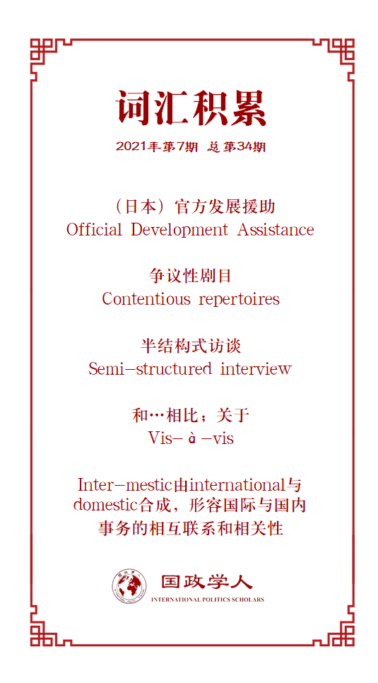

收录于合集

作品简介
【作者】 Wrenn Yennie Lindgren，挪威国际事务研究所研究员，专注于研究亚太地区国际关系与日本外交安全政策，研究兴趣包括日本、亚洲北极地区、东亚地区主义及人类安全。
【编译】 姚博闻（国政学人编译员、新加坡国立大学公共政策系）
【校对】 张彦赪
【审核】 谢菁
【排版】 韩柯
【美编 】游钜家
【来源】 Yennie Lindgren, W. (2020). WIN-WIN! with ODA-man: legitimizing development assistance policy in Japan. The Pacific Review , 1-31.
期刊简介
《太平洋评论》（ The Pacific Review ）是太平洋地区研究的主要平台，作为跨学科期刊，其宗旨和目标为打破研究领域之间以及学术界、新闻界、政府和商界之间的壁垒，重点关注政策问题。根据Journal Citation Reports显示，2019年该刊的影响因子为1.633，在77类区域研究的SSCI期刊中排名第11，在国际关系类的95份SSCI期刊中排名第35。
Wrenn Yennie Lindgren
**** “ODA先生”与日本发展援助政策的合法化
WIN-WIN! with ODA-man: legitimizing development assistance policy in Japan
内容提要
官方发展援助（ODA）是日本最重要的外交政策工具之一，致力于建立日本的全球网络，并支持东南亚地区和其他地区的盟友。在当前中国崛起、日本国内财政和人口形势日益严峻的背景下，日本外务省（MOFA）发起了一场以国内为导向的合法化运动，将一个受欢迎的动漫人物更名为“ODA先生（ODA man）”，用来增进公众对ODA的理解和支持。本文采用解释主义的分析法，着眼于解读发展合作促进仪式上的表现、日本外务省的YouTube频道的动画视频和采访数据，同时审视其修辞策略的使用，从而深入研究了日本是如何推广其核心外交政策的。尽管ODA先生给人一种愚笨而温和的印象，但他传达的信息却十分严肃，重现了有关日本和世界的经济和安全的主流叙述。有分析指出，日本的外交政策策略既有创新性，又有路径依赖性。虽然ODA先生像是一个新颖的事物，但他讲述的故事以及讲述的方式却是令人熟悉的。文章进一步说明了日本在追求其外交政策的公众合法化上的重要趋势。
文章导读
01
简介
2018年，日本外务省发起了一场面向国内民众的官方发展援助（Official Development Assistance）合法化运动，将一个受欢迎的卡通人物改名为“ODA先生”，旨在加深公众对官方发展援助的兴趣和了解。对日本而言，ODA无疑具有极大的重要性，这不仅是指经济回报层面，就权力和声望的角度来看也是如此。该项目是战后日本声誉的修补者和建设者，它展现了日本政府对全球事务的承诺和对全球援助体系的参与。
在过去的十年中，特别是2012年安倍首相上台后，日本已经对其ODA政策进行了重塑，希望在以中国崛起为主要特征的新地缘政治背景下，提高日本的全球地位。除了区域发展的变化外，日本的ODA政策也因其国内情势而调整。人口问题、长期财政危机、飞涨的社会福利成本和严重的劳动力短缺等一系列紧迫的国家安全问题给日本的公共系统和国家预算带来了巨大压力，因此，那些代价高昂的政策都将受到密切的关注。保持ODA作为日本外交政策中的关键性工具的战略考量，以及应对公众对增加ODA预算的低迷兴趣的夹缝中，ODA先生应运而生。
根据查尔斯·蒂利（Charles Tilly）“争议性剧目（contentious repertoires）”的理论，包括社会运动、革命团体或国家官僚机构在内的一系列集体行动都是从行为体们已知的策略中衍生。从国际关系学的范畴来看，这意味着日本政府在外交政策领域以及推广政策追求公众合法性的过程中，倾向于使用其熟悉的工具。即使在面临新形势不得不进行修正时，这些调整往往仍在集体的文化和历史保留有迹可循。日本政府通过使用卡通人物来证明国家对外政策的公众合法性，正说明了其策略上的文化特异性。本文将会研究ODA先生的战略部署和日本在谋求对外援助公众合法化中对于修辞策略的使用。
02
理论和方法
在理论方面，作者参考了剧目和公众合法化的相关文献。查尔斯·蒂利认为，剧目概念背后的基本思想是，当执行集体行动时，人们将集合利用参与者的共享知识资源。由此，他假设，集体行动是由已知的行动剧目中衍生的。因此，我们需要探究包括国家在内的集体所能使用的一系列权力手段。在外交政策层面，这类剧目由国家为提高其在政治社群中的影响力而部署的手段构成，包括实物、政策、言语行为、表演和实际行为。在稳定的情况下，我们很少能看见对这些手段剧目的创新或修改。但在经济、地缘政治或军事破裂的时期，该理论认为剧目会有更多的变化。
国际关系和政治不仅关注国家间的关系，也关注国家行动背后的国内起源和维持。在一个国际关系和国内情形（inter- mestic）愈发紧密联结的世界里，政策产生的国内与国际原因同是研究过程的重要组成部分。在外交政策公众合法化的相关文献中，学者们对这样的一个过程尤其感兴趣：即某项政策是如何逐步变得可供想象的、引发共鸣并且成为主导的。国家叙事被用来塑造公众对国际发展、事件和趋势的理解。通过维持、产生和转化某种“常识性”，政策合法化的行为者最终能够使得相关政策对公众而言变得可能、可接受甚至不可避免。
根据政策工具的特点，研究剧目的方法也有所不同。本文中，作者主要关注ODA先生在不同领域与日本公众的互动，寻找这个卡通人物的具体结构和其作品中传递的信息，以及使他“栩栩如生”的文化和社会背景。该分析侧重于理解政策制定者是如何试图塑造和改变公共领域的。该研究以外交政策叙事和表现在人际网络中的具体表现为研究出发点，并受到了Alexander（2011）有关社会表现的文化语用学理论的启发。作者捕捉到了日本对其ODA政策合法化过程中的口头、书面和表演的不同方面，并通过分析ODA先生的叙述内容，展示了一些与寻常事物相关的争议是如何在边界合法化方面取得成功的。
03
研究数据
本文的实证数据主要来自于两个方面。首先，作者从2018年和2019年的“环球庆典（Global Festa）”现场收集了人种学数据。其次，作者从日本外务省总部、网站和YouTube频道上收集并记录了各种文本、照片和视频资源，并且还与日本外务省官员、ODA项目负责人以及ODA先生的创作者进行了八次半结构式访谈（semi- structured interviews）。
04
实证分析
作者对收集到的数据进行了剧目和修辞上的分析。首先，基于世界各地不同的文化和历史，每个国家采用不同的公共推广策略以使其政策合法化。在日本，一种惯用的方法是利用大众视觉文化的丰厚传统来吸引读者，并提高政府向大众传达声音的能力，其中就包括利用漫画和人物角色向公众宣传。这源于日本公众对动漫的一种超越年龄段的广泛喜爱。漫画常常通过叙述有争议和敏感的历史和政治话题来参与政治。在这种情况下，漫画创作者参与到了一个权力的生产过程中：通过生产知识并尝试说服某种行为的合理性、可取性、以及是否是不可逃避的。为有争议的政策争取公众支持的尝试被视为日本“文化产业复合体”的一部分。此外，日本人在消费卡通动漫时所唤起的对于那些已有含义、体验和感受的无限潜力也使这类题材成为日本外务省颇为钟爱的媒介方式。鉴于此，近年来日本政府在在外交政策的公众推广中使用卡通动漫的做法屡见不鲜。然而，尽管有这些先例，ODA先生仍然可以说是日本政府的一种创新。
ODA先生最初出现是因为公众对ODA项目的意义、目的和重要性缺乏理解。由于发展援助项目的资金最终是由日本公众纳税产生的，公众对ODA的缺乏理解或低迷兴趣是日本外务省面临的长期挑战。现有研究表明，尽管民意确实影响了日本的发展援助政策，并且近年来的发展合作也更明确地与“国家利益”相关，但日本公众舆论限制了变化的范围。多年来，当政府官员用正经严肃的语气解释ODA时，普通民众并未产生积极响应。在这种情形下，日本外务大臣河野太郎“任命”了ODA先生，旨在“加深公众对于ODA的兴趣和了解，并有助于提高公众对于实施ODA项目重要性的理解。”据其创作者透露，ODA先生被用作一种媒介来传达日本外务省所不能传达的：因为公众往往倾向于将这一卡通人物视为“第三方人士”，而非日本外务省工作人员。此外，ODA先生简单易懂而又风趣幽默的故事也有利于展示日本如何受益于ODA项目。
在ODA先生诞生之后，日本政府开始将其部署到与日本外务省国际合作相关的一系列活动中，如在日本举办的G20、APEC会议等。外务大臣和一些日本外务省工作人员的名片上也开始出现ODA先生的吉祥物图案，而这类名片吉祥物通常是为日本主办的大型国际活动所准备的。这种用意显示了官方对这一企划的高度重视。此外，ODA先生也被广泛地运用于社交媒体、各类国内活动、娱乐产品以及教育项目中，以宣传ODA对日本和世界的重要性。
作者从四个方面着重分析了ODA先生在2018年环球庆典中的表现，该庆典是日本规模最大的、为促进公众了解国际合作而举办的年度活动。首先，ODA先生的出现创造了一个戏剧空间，在这里， ODA先生和他的倡导者按照剧本，以戏剧的方式呈现生活。第二，这是一种文化交流，用以重振这样一种想法：即ODA作为一种外交政策工具，能够通过欢乐和强调双赢的局面，对世界和日本社会产生积极影响。第三，ODA先生的表现可以被视作一种仪式，以反映日本的社会结构及其所处的历史文化。第四，舞台上人物的具有高度的象征性，因为ODA先生的原型是日本公众十分熟悉的动漫人物——吉田君（Yoshida- san）。虽然ODA先生这个角色并非为众所知，但其原型的知名度能够建立起观众与其舞台上的戏剧表演的联系。此外，ODA先生仪式化的表演也利用了符号、象征和言语行为。ODA先生展现了一个生动的形象：总是皱着的眉头和一贯的运动风装扮。同时，他也普及了ODA的起源，告诉观众如何记住官方发展援助的ODA缩写，并开玩笑地取笑其对手角色对ODA政策重要性的无知。
与环球庆典上的表演类似，ODA先生在其动画和文字产品中的表现也具有象征性。在这些作品中，ODA先生开启了了一场环球之旅，在沿途中解释了用日本纳税人的钱来援助他国的重要性，试图提高公众对他在异国他乡的援助项目有的意识和兴趣。日本外务省精心挑选了四处ODA的海外走向：东南亚地区的海事安全，肯尼亚的教育质量，土耳其的基础建设和秘鲁的紧急援助。这些案例用来拓宽人们对发展援助的理解、展现ODA政策援助的多方领域，包括工业发展、人力资源建设、政策援助和基础设施建设。
ODA先生塑造和再现了日本的边界、外交政策剧目和外部世界，这样一种塑造用特定的意义填充了日本和外部世界的日常事务。日本外务省在ODA先生运动中运用的修辞策略是一场持续的斗争，目的不仅停留在主导发展援助相关的公众叙述，也是面向更为普遍的政府政策内容及实施。塑造和维持主导叙事的能力，意味着使官方发展援助这一外交政策工具在日本公众中更具有长期的可持续性。外部世界是复杂的，在日本情况也是如此。尽管动漫人物的宣传方式使得简化主义的叙事不可避免，但ODA先生的相关企划是我们了解日本外务省如何公开宣传其政策工具的一个窗口。作者认为，日本外务省主要运用了四种修辞策略来界定日本与外部世界之间的边界和关系。第一种策略认为， 日本是二战后发展援助的受益者，现在作为一个发达国家应该帮助其他国家 。ODA先生的叙事中强调了日本能够做出改变的能力和规范要求。这与日本独特的经历相关，即其既不属于西方也不属于东方，但日本的经济在二战后涅槃重生成为了东亚地区的经济翘楚。第二种策略认为， 日本是一个危险世界中安全与和平的保护者 。ODA先生将日本描绘成一个慷慨、知识渊博、经验丰富的导师，可以根据自己的经验帮助他人的，有能力在朝鲜“幽灵船”或东海问题等冲突中作出自己的贡献。第三种策略认为， 日本是一个依赖于世界其他国家生存的海洋国家 。日本的国家资源和粮食大部分是通过海路进口和运输到国内的，而对海路沿线国家的援助确保了海路的安全。最后一种战略则声称 日本是其自身ODA项目的捐助国和受益者。
这四种修辞策略都致力于塑造和再现有关过去和现在的日本与外部世界的常识性含义。其中最两大主要的标准是道德责任和日本自身的利益。这种标准也超越了了以往将日本外务省负责人道主义援助，而当时的通商产业省负责经济发展型援助的一分为二的印象，从而标志着日本官方援助的双重合法性的战略演变。此外，ODA先生塑造了以安全和经济为中心的主流叙事。最后，ODA先生应该被理解为一种具有创新性的工具，但它深深植根于更广泛的日本文化背景和外交政策剧目中。
05
结论
本文研究了ODA先生的施行是如何作为一个追求公众合法性的运动，用以塑造日本社会层面对发展援助的意义和合法性的。虽然这一企划只面向日本国内观众，但提高日本公众对ODA的理解和支持的最终目标意味着ODA是日本外交政策剧目的一个工具。从这个角度看，日本外务省对外政策剧目的创新和ODA先生工具的具体执行是一种权力- 政治进程的战略选择，即一个国家评估并部署它认为最具战略意义或最有可能成功的政策工具。本文解释了为什么一个温和、愚笨和幼稚的卡通运动会被视为最理想的以引起公众关注和支持的方法。只有对制作方（日本外务省）和观众（日本公众）所熟悉的领域进行文化剧目分析，才能了解使用卡通人物获得公众支持外交政策的意义。ODA先生参与了权力斗争，使日本政府的发展援助政策合法化。尽管ODA先生的表现中显得愚笨和幼稚，但ODA先生关于世界、日本和发展援助的信息是严肃的，他重现了关于日本和外部世界的主要经济和安全叙述，以及ODA的自利性和规范性。ODA先生是国内政策动员剧目的一个例子，说明外交政策阐述不仅仅是国际性的事务，而且也涉及国内领域。综上所述，本文展现了日本外交政策的创新和路径依赖：虽然ODA先生是新的事物，但他讲述的故事和表现的方式都是令人熟悉的。
译者评述
作者以日本外务省近年新推出的宣传方式——卡通人物“ODA先生”为切入点，分析了日本政府为合法化自身外交政策和对外援助计划并获得公众支持而进行的工作。根据查尔斯·蒂利有关剧目的理论，国家机构在进行集体行动时，倾向于在其工具库中选择自己更为熟悉的政策工具，并且这些工具大多与其国内的文化和历史相关。作者认为，考虑到日本国内公众对于动漫文化的广泛热爱，ODA先生被日本外务省选中为其宣传大使也就不足为奇了。具体到ODA先生相关企划的部署与执行，在其相关的宣传活动和作品中，ODA先生使用了尽量通俗易懂且风趣幽默的语言，并通过四种修辞策略以迎合日本公众的心态与期望。稍显遗憾的是，尽管作者从来源、设计和执行的层面分析了ODA先生企划的可行性，但或许因为是新近推出的缘故，所以作者并未评估这一方案所取得的实际成效。
尽管如此，ODA先生对于其他国家，尤其是政策宣传模式仍处于探索期的中国还是有一定启示的。中国也有着自身发起的对外合作项目——“一带一路”倡议。自“一带一路”倡议提出以来，中国政府在政策的国际传播上付出了大量努力[1][2]，但国内宣传，尤其是大众文化领域却稍显不足[3]。结合ODA先生企划的经验，中国也应该找到符合自身国情与文化环境的宣传方式，使国内公众对于“一带一路”以及中国其他的对外合作、援助政策有更多的了解。
参考文献
[1] 张浩. 推进“一带一路”倡议宣传，加强中国国际话语权[OL]. 光明网, 2019-12-10.
[2] 孔德明. “一带一路”宣传中的八项注意[OL]. 人民网, 2016-01-08.
[3] 谢博闻,张瑜烨,刘儒田.“一带一路”新闻与传媒研究的知识经验与趋势分析——基于CiteSpace科学知识图谱(2013—2019)[J].中国出版,2021(11):63-67.
词汇整理

文章观点不代表本平台观点，本平台评译分享的文章均出于专业学习之用, 不以任何盈利为目的，内容主要呈现对原文的介绍，原文内容请通过各高校购买的数据库自行下载。
好好学习，天天“在看”
国政学人
支持学术公益与知识传播
微信扫一扫赞赏作者 __赞赏
已喜欢，对作者说句悄悄话
取消 __
发送给作者
发送
最多40字，当前共字
上一页 1/3 下一页
长按二维码向我转账
支持学术公益与知识传播
受苹果公司新规定影响，微信 iOS 版的赞赏功能被关闭，可通过二维码转账支持公众号。